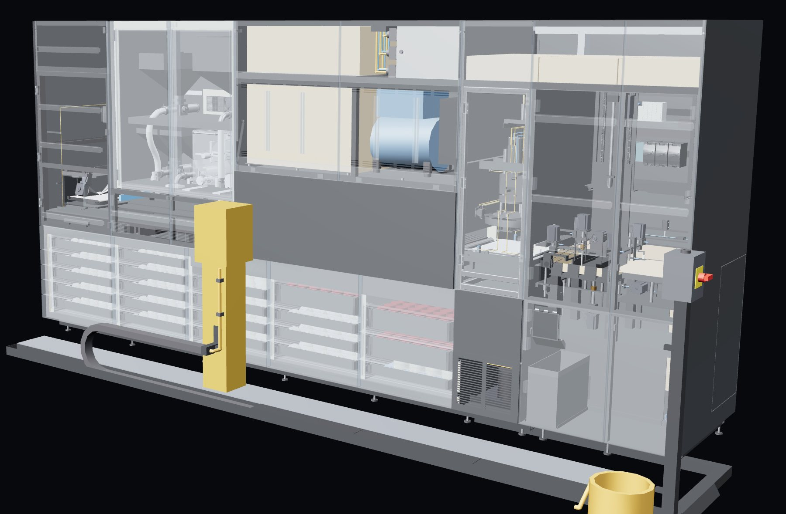
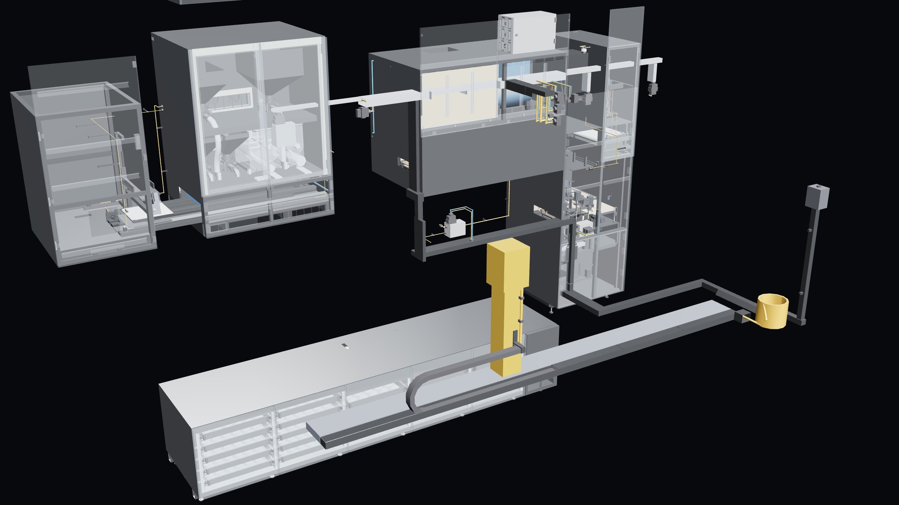
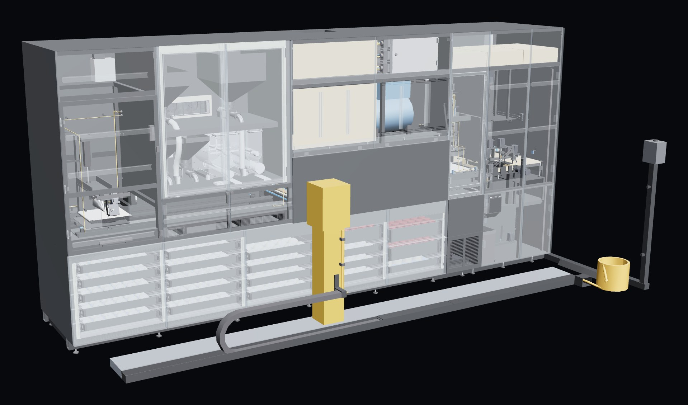
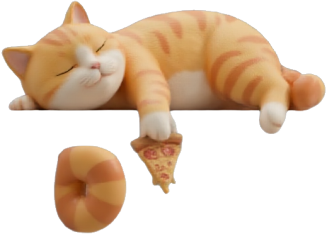
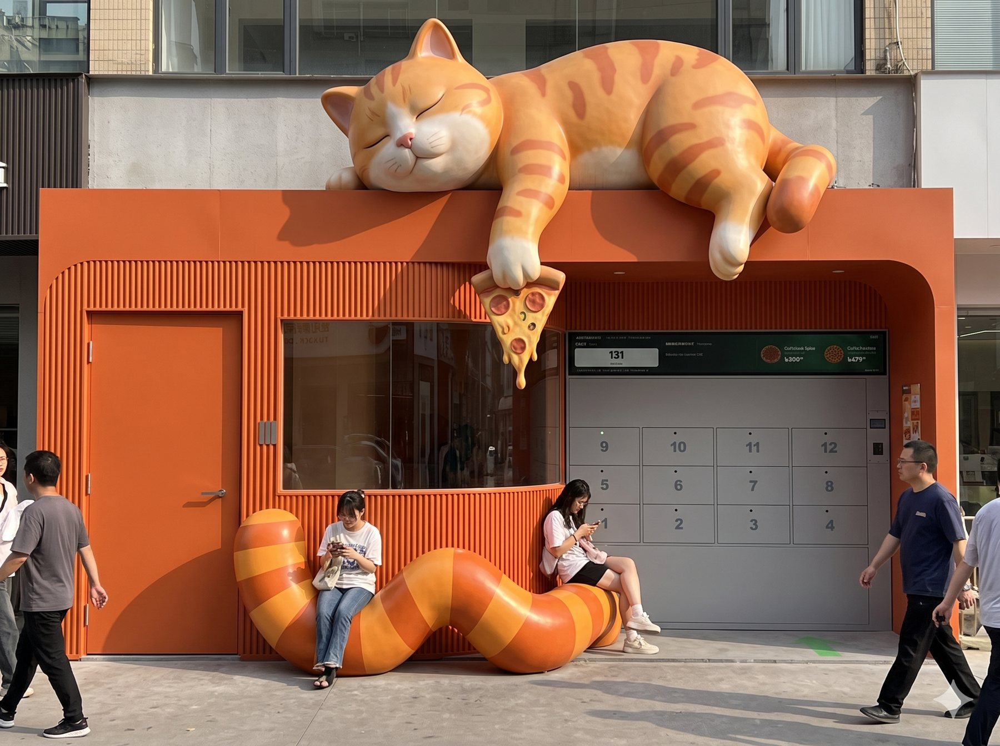
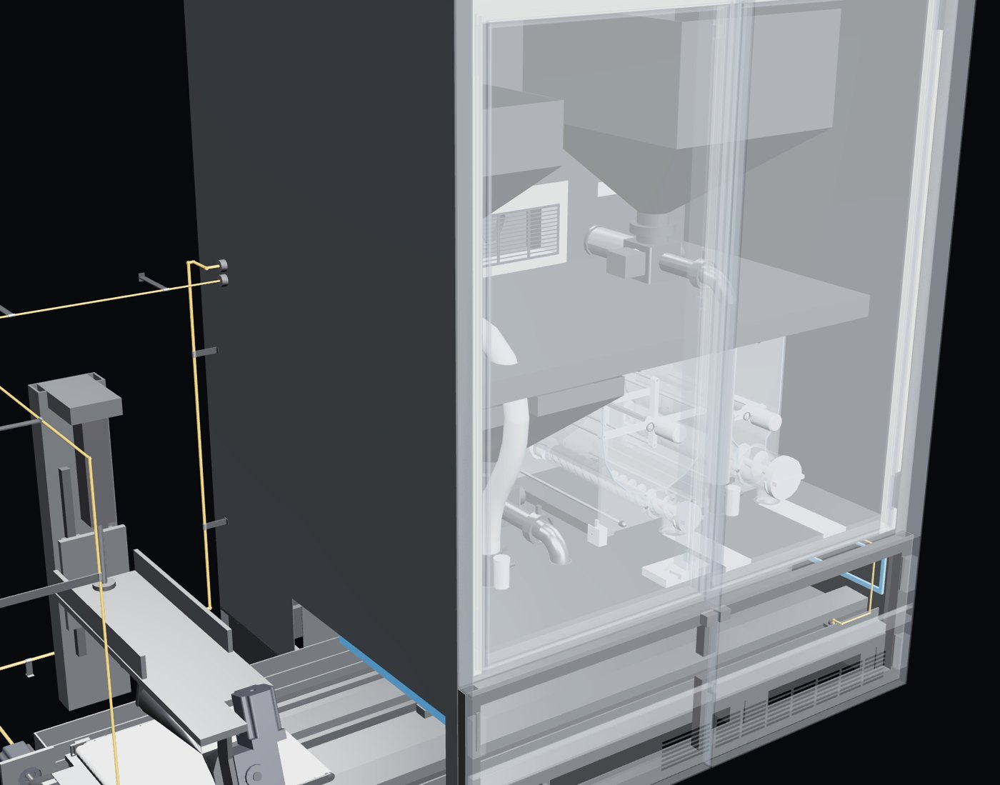
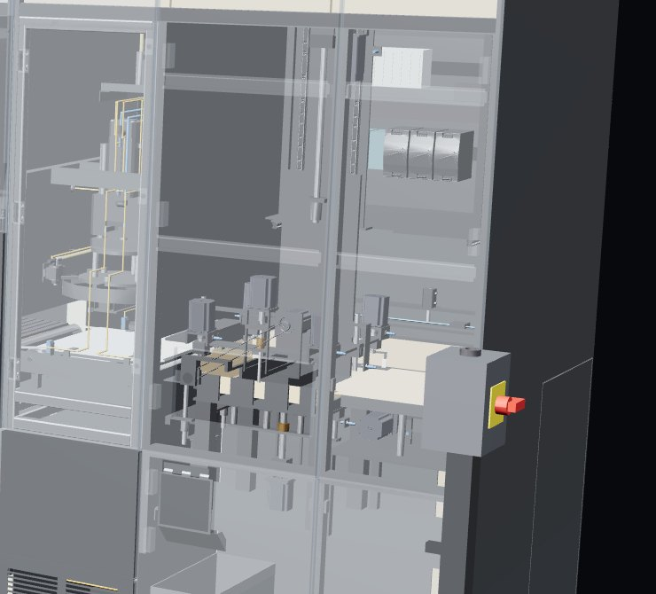

Mutfağın otonom geleceği. Her sektörde, her ölçekte.
Taslak. Bütün bölümler hazır; son sadeleştirme turu yapılacak.
Mimar ve endüstriyel tasarımcı (Mimar Sinan Güzel Sanatlar Üniversitesi). TOGG ve FIAT başta olmak üzere Türkiye, İtalya ve Çin merkezli otomotiv markalarında tasarım deneyimi. Torinoarch kurucu ortağı.
SorumlulukMakine, mekân ve sistem tasarımı.
Sosyolog; pazarlama iletişimi yüksek lisansı (Londra). Tüketici davranışı, marka stratejisi ve iletişim. Torinoarch kurucu ortağı.
SorumlulukMarka stratejisi, iş planı, pazar ve iletişim.
İŞKUR’a göre 2026’nın ilk beş ayında. Turizm ve otelcilik tek başına 36.784 personel arıyor.
2026’da asgari ücretli tek bir çalışanın işverene aylık maliyeti.
Haftada 168 saat açık kalmak için, yasal haftalık 45 saat ve gece 7,5 saat sınırıyla, tek bir pozisyona en az dört çalışan gerekir. Asgari ücretle bile ayda yaklaşık 160 bin TL.
Tat, porsiyon ve hijyen o gün mutfakta kimin olduğuna göre değişir. Şube sayısı arttıkça standart düşer.
Şantiye, festival, gemi, sezonluk alan: birkaç aylık ihtiyaç için personel bulmak ve mutfak kurmak ekonomik değil.
Kaynak: İŞKUR 2026 ocak–mayıs açık iş verisi (haber aracılığıyla) · asgari ücretin işverene maliyeti, Çalışma ve Sosyal Güvenlik Bakanlığı hesabı, 2 puan SGK indirimli (PwC bülteni) · gece çalışması: 4857 sayılı İş Kanunu md. 69 (mevzuat.gov.tr). 4 kişi = 168 saat ÷ 45 saat, izinler hariç.
Üretimi makine yapar. İnsan yalnız ikmali, temizliği ve gerekirse satışı yapar.
Açık iş sayısı ve işçilik maliyeti her yıl artıyor. Otomasyon artık bir tercih değil, bir zorunluluk.
Sipariş artık uygulamadan geliyor; müşteri mutfağı görmüyor. Mutfağın nasıl çalıştığı değil, ürünün aynı olması önemli.
Kaynak: ABD Ordusu “Sustained Autonomous Meals” denemesi (Stars and Stripes, Mayıs 2026; AUSA).
Hedef alanlar. Her birinde aynı ihtiyaç: personelsiz, tutarlı, taşınabilir mutfak.
Rakip değil, çözüm ortağı: şubelerindeki personel yükünü ve kalite farkını alır.
Fabrika, kampüs ve ofis yemekhaneleri; vardiyalı, 7/24 çalışan yerler.
Müteahhit sahalarında dönemlik mutfak; proje bitince sökülüp bir sonrakine taşınır.
Küçük “box” üniteler: sahil, fuar, stadyum. Sezon bitince taşınır.
Hastaneler, havalimanları, otoyol tesisleri: gece de açık kalan küçük “box” üniteler.
Sefer boyunca, sınırlı alanda, az personelle çalışan hazır mutfak.
Sahada kurulan, ihtiyaca göre tasarlanan konteyner mutfak.
Uzak ilçe ve beldeler, sanayi siteleri, yurt çevreleri: talep var ama restoran yok, personel bulunmuyor, personelli dükkân kâr etmiyor.
Ev tipi otonom mutfak.
Kaynak: TÜİK Yıllık Sanayi ve Hizmet İstatistikleri (TEPAV, Ağustos 2026) · çalışan sayısı Haziran 2026 (haber) · dünya pazarı Data Horizzon Research tahmini, 2024’te 1,9 mlr $ (Food On Demand). Dünya pazarı tahminleri raporlara göre çok değişir.
İlk adım: kendi restoranımız.
AUTOKITCH’in teknolojisi tek bir makine değil, bir platform. Aynı yapı taşları farklı biçimlerde birleşir; her birleşim yeni bir makine olur.

Çekmeceli soğuk dolap; malzeme ve stok.
Raylı robot kol; istasyonlar arası taşıma.
Açma, kesme, karıştırma; ürüne göre seçilir.
Her malzeme gramajında.
Fırın, ızgara ya da fritöz; ürüne göre.
Kutulama ve kapatma.
Kodlu dolap; müşteri ya da kurye alır.
Kontrol sistemi ve dijital ikiz; hepsini yönetir.
Dükkân hattı. İlk uygulaması pide ve lahmacun; PIN dükkânlarında çalışır.
Konteyner ve box ünite: şantiye, festival, gemi, savunma. Taşınır, kurulur.
Ev tipi. Aynı platformun küçük ölçeği.
Kasetlerde ve çekmecelerde sensörler var; her malzemeden ne kadar kaldığını bilir.
Malzeme azalınca uyarır; ne zaman, neyin, ne kadar getirileceğini ikmal listesi olarak hazırlar.
Hatalı ürün ve atık ayrı bir kapta toplanır, ikmalde boşaltılır.
Dolap sıcaklığını sürekli ölçer; sınır aşılırsa alarm verir.
Arızayı teşhis eder, uzaktan haber verir. Elektrik kesilirse kaldığı yerden devam eder.
Gramaj, pişme süresi ve sıcaklık kayda geçer; tutarlılığın kanıtı.
Endüstri 4.0 kriterlerine göre tasarlandı.
| Kontrol | Siemens SIMATIC S7-1500F emniyetli PLC · PROFINET ve PROFIsafe haberleşme |
|---|---|
| Hareket | SINAMICS S200 servo sürücüler · çok turlu mutlak enkoderli SIMOTICS servo motorlar |
| Robot | 6 eksenli robot kol · yer rayı ile 7. eksen |
| Emniyet | EN ISO 13849 emniyet fonksiyonları (PL d/e) · CE uygunluğu (çalışma sürüyor) |
| Hijyen | Paslanmaz çelik · sökülebilir gıda temas parçaları · endüstriyel bulaşık makinesinde yıkama |
| Yazılım | IEC 61131-3 PLC programı · dijital ikiz · sipariş platformu entegrasyonları |
Dünyada 60’tan fazla firma mutfak robotu geliştiriyor. Çoğu tek bir işi ya da tek bir ürünü yapıyor. Siparişten teslime bütün işi yapan tam hat az.
| Firma | Ülke | Ne yapıyor | Büyüklük | Durum · 2026 |
|---|---|---|---|---|
| Tam hat · en yakın rakipler | ||||
| Hyper Food Robotics | İsrail | Konteyner içinde insansız pizza restoranı | ~10 milyon $ yatırım* | Pizza Hut İsrail ile çalışıyor; büyüme haberi sınırlı |
| Pazzi | Fransa · İspanya | Üç robot kollu pizzacı | 12 milyon € üzeri yatırım (2022’ye kadar) | 2022’de tasfiye; 2026’da Madrid’de yeniden açılış, franchise ile büyüme hedefi |
| Nala Robotics | ABD | Robot kolla pizza, saatte 50 | Açıklanmadı | Satış yok, aylık kiralama |
| Let’s Pizza | İtalya | Hazır tabandan sosla, pişir, kutula: otomat | Açıklanmadı | Satılık; taban dışarıda hazırlanır |
| Genel otonom mutfaklar | ||||
| Circus · CA-1 | Almanya | Otonom pişirme robotu; süpermarket, fabrika yemekhanesi, ordu | Borsada · 2025 geliri ~1,5 milyon €, zararı ~18 milyon € | Temmuz 2026’da yıllık gelir beklentisini 44–55 milyon €’dan 5,2 milyon €’ya indirdi; kurulum ve servis maliyeti beklenenden yüksek çıktı |
| Infinite Kitchen | ABD | Otomatik kâse (bowl) mutfağı | 2025’te 186,4 milyon $’a satıldı | Sweetgreen’den Wonder’a geçti; 20’den fazla restoranda |
| Firma | Ülke | Ne yapıyor | Büyüklük | Durum · 2026 |
|---|---|---|---|---|
| Tek iş yapan robotlar | ||||
| Miso Robotics | ABD | Fritöz robotu | ~130–200 milyon $ yatırım* | Mevcut mutfağa eklenir; tek başına mutfak değil |
| Lab2Fab · Middleby | ABD | Sos ve peynir hattı | Sahibi Middleby: 2025 cirosu 3,2 milyar $ | Büyük mutfak ekipmanı grubunun bir ürünü |
| Kapananlar | ||||
| Zume | ABD | Kamyonda pişiren pizza robotu | ~445 milyon $ yatırım | 2020’de pizzayı bıraktı, 2023’te kapandı |
| Picnic | ABD | Pizza malzeme hattı | ~25 milyon $ yatırım | Mayıs 2026’da borcunu ödeyemedi, varlıkları satıldı |
| Karakuri | İngiltere | Kâse robotu | ~13 milyon £ yatırım | 2023’te yeni yatırım bulamadı, kapandı |
| Piestro · Chowbotics | ABD | Pizza kioskı, salata robotu | ~12 milyon $ · DoorDash’in | Seri ürün teslim edemedi · beklenen performansı vermedi |
| Türkiye | ||||
| Yerli üretici yok | Türkiye | Örnekler robot garson ve robot barista düzeyinde | — | Otonom mutfak üreten yerli firma bulunmuyor |
* Şirket açıklaması değil, yatırım veri tabanlarının tahmini.
| Neden | Örnek | Bizim önlemimiz |
|---|---|---|
| İnsanlar robota hazır değildi | Pazzi kurucusu: halkın robotlara güvensizliği | Dükkânda gündüz müşterinin karşısında bir insan var. Müşteri sisteme yavaş yavaş alışır. |
| Maliyet düşmedi, fiyat avantajı yoktu | Circus: kurulum ve servis maliyeti beklenenden yüksek | Hedef, ürünü piyasadan daha ucuza satmak. Standart modüller, uzaktan izleme ve bakım. |
| Büyük alan, pahalı kurulum | Pazzi: “ölçeklenemedi”, Paris şubeleri kapandı | Yaklaşık 4,5 m’lik kompakt hat; istasyonlar sökülüp taşınır. |
| Ürün hazır olmadan büyüme | Piestro seri ürün teslim edemedi; Zume teknik sorunlarla pizzayı bıraktı | Önce dijital ikizde simülasyon, sonra tek dükkânda deneme, ondan sonra çoğaltma. |
| Yalnız yatırımla yaşamak | Karakuri ve Picnic yeni para bulamadı | Makine önce kendi restoranımızda çalışır ve gelir üretir. |
Makine, kontrol yazılımı ve dijital ikiz bizim tasarımımız. Hazır bir makine alıp üstüne marka koymuyoruz.
Hat önce kendi dükkânımızda çalışır. Sahadan gelen her veri makineye geri döner.
Rakiplerin çoğu tek bir işi ya da tek bir ürünü yapar. Bizim hat bütün işi yapar; istasyonlar değişince ürün de değişir.
Aynı istasyonlar farklı kapasite ve menüyle kurulur: dükkân, şantiye, gemi, box ünitesi.
Siemens kontrol ve emniyet sistemi, CE uygunluğu, Endüstri 4.0.
Avrupa tasarımı, Türkiye üretim maliyeti. Türkiye’de bu alandaki ilk üretici.
Kaynak: “Kitchens of Tomorrow” küresel robotik mutfak haritası, Mart 2026 (64 firma) · Circus 2025 sonuçları ve 2026 beklenti düzeltmesi (Business Wire, Mayıs 2026; EQS, Temmuz 2026) · Pazzi kapanışı ve kurucunun açıklaması (The Spoon, Ekim 2022; Blick) · Infinite Kitchen satışı (Restaurant Dive) · Middleby 2025 sonuçları (Business Wire) · Zume (NRN) · Picnic (GeekWire, 2026) · Karakuri (The Spoon) · Chowbotics (TechCrunch) · Nala (The Robot Report) · Hyper, Miso, Piestro yatırım tutarları: yatırım veri tabanları (Startupim, CB Insights, Caplight). Türkiye için tarama Ekim 2026.
AUTOKITCH’in teknolojisi üç ayrı işte para kazanır: restoranda, merkez depoda ve makine satışında.
Kendi dükkânlarımız. Kanıtlandıkça yeni noktalar: kendi dükkânlarımız ve franchise.
Kazanç: ürün satışı. Franchise verilirse giriş ücreti ve cirodan pay tekrarlayan
Hamur ve harç tek merkezde, tek reçeteyle üretilir; ileride otonom, tek kişi yönetir. Dükkânlara oradan dağıtılır.
Kazanç: franchise’a hamur ve harç satışı tekrarlayan; kendi dükkânlarda toplu alımla daha düşük malzeme maliyeti.
PIN’de sahada denenmiş makine, başka işletmelere satılır ya da kiralanır.
Kazanç: makine satışı ya da kirası; bakım ve yazılım aboneliği tekrarlayan
İlk dükkânlar bizim. Rakamlar sahada gerçekleşir; makine kendi dükkânımızda olgunlaşır.
Yeni dükkânları kendimiz açarız ya da franchise veririz. Dükkân sayısı artınca merkez depo kurulur.
Sahada denenmiş makineyi başka sektörlere satarız: zincirler, kurumlar, şantiyeler, gemiler, savunma.
Cirodan pay, depo tedariki, bakım ve yazılım her ay gelir. Her yeni dükkân ve her yeni makine bu geliri büyütür.
Kendi dükkân sayısını yatırım belirler. Franchise oranları ve ücretleri ilk dükkânların rakamlarıyla belirlenecek.
İlk ürünümüz pide ve lahmacun. Herkesin bildiği, her saate ve her bütçeye uyan bir ürün. Ama bugün herkese, her saatte ulaşmıyor.
Büfe, dönerci, hamburgerci de 7/24 değil. Gece yarısından sonra sıcak yemek bulmak neredeyse imkânsız.
Gece açık kalan işletme fazla mesai ve vardiya öder; bu fark müşterinin hesabına yansır.
Dışarıda iki lahmacun ortalama 308 TL. Bu, asgari ücretlinin bir günlük net kazancının (yaklaşık 936 TL) üçte biri.
Aynı ürün şehre, semte ve ustaya göre değişiyor. Hesabın ne geleceği, mutfağın ne kadar temiz olduğu belli değil.
Hedef kitlemiz: saati ve bütçesi ne olursa olsun, içi rahat bir şekilde doymak isteyen herkes. Gece çalışan bunların başında geliyor.
Her yaşa, her öğüne uyar. Yeni bir ürünü tanıtmaya gerek yok; tarif tanıdık, yalnız yapılış biçimi yeni.
Pide zincirleri var, ama hamburger ve pizza zincirlerinin yanında küçük kalıyorlar. Büyüme alanı açık.
Düz hamur, standart harç, kısa pişirme. Kutuda bozulmaz, paket servise dayanıklı.
İlk markamız. Her keseye, her saate uygun; insanın içi rahat doyduğu yeni nesil pideci.Pide ve lahmacun · 7/24 · ürün her saat teslim dolabından.
Kaynak: Research İstanbul Lahmacun Endeksi, Haziran 2026: Türkiye ortalaması 153,9 TL, en düşük Konya, en yüksek Adana (Dünya) · 2026 net asgari ücret 28.075,50 TL ÷ 30 gün (KPMG) · gece açık yer ve gece fiyatı: saha gözlemi · hedef kitle ve cevaplar: PIN marka kararları, Eylül 2026. Marka adı PIN çalışma adıdır; tescil başvurusu yapılacak.
Yemeksepeti’nin 25 yıllık verisinde zirvede lahmacun var. Pide ve lahmacun için ayrı bir resmî pazar istatistiği yok; ama sipariş verisi büyüklüğü tek başına gösteriyor.
Türkiye’de dışarıda yemek pazarının tamamı
~22 mlr $Burger, pizza, döner gibi standart ve hızlı servis
~8,4 mlr $Hızlı ticaretin %69,5’i; 388,7 mlr TL’lik hacmin yemek payı
~270 mlr TLPide ayrıca raporlanmıyor; dükkân satışları bu rakama dahil değil
6,67 mlr TLHamburger, tavuk ve pizza zincirleri 500–830 restorana ulaştı. En büyük pide zinciri yaklaşık 200 restoranda.
Yeni bir ürünü sevdirmemiz gerekmiyor; insanlar lahmacunu zaten en çok sipariş edilen ürün yapmış.
Hızlı servisin payı altı yılda %22’den %38’e çıktı; bu pazarın %44’ünü ilk 10 marka tutuyor.
Pidem ve Usta Pideci gibi zincirler pazarda. Ancak en büyüğü bile hamburger ve pizza zincirlerinin dörtte biri kadar; kategori zincirleşmenin başında.
Talep en üst sırada, ama kategoride henüz bir lider yok. Pide zincirlerinin küçük kalmasının nedeni talep değil, üretimin ustaya bağlı olması. Biz tam bu darboğazı çözüyoruz.
| Bugünkü pide zinciri | PIN | |
|---|---|---|
| Üretim | Usta ve mutfak ekibi; büyümek için her şubeye yeni usta gerekir | Makine; yeni şube = yeni hat, usta aranmaz |
| Alan | Franchise için en az 110 m² zemin, toplam 280 m² (Usta Pideci şartı) | 15–20 m²; mahallede, kampüste, yol üstünde açılır |
| Saat | Restoran ya da AVM saatleri | 7/24; gece teslim dolabıyla |
| Kalite | Ustaya ve vardiyaya göre değişir; zincirler bile reçete sadeleştirmeyle uğraşıyor | Reçete, gramaj ve pişme süresi makinede sabit |
| Fiyat | Personel ve büyük alan kirası fiyata biner | Düşük personel ve kira; fiyatta rekabet edebilir |
Usta Pideci franchise için en az 110 m² zemin ve toplam 280 m² alan istiyor. PIN 15–20 m²’ye sığıyor; aynı alanda 14 nokta. Daha az kira, daha çok yer, daha hızlı büyüme.
Türkiye’nin en büyük hızlı servis şirketi TAB Gıda, 2025’te Usta Pideci’de reçeteleri sadeleştirip süreçleri yalınlaştırdı; amaç ürünün her şubede aynı çıkması. Ustayla zor olan bu tutarlılık, makinede baştan var.
Pizzada lider zincirin yaptığını pidede henüz kimse yapmadı. Biz bunu ustayla değil, makineyle yapacağız.
Kaynak: Yemeksepeti 25. yıl verileri, Mayıs 2026 (Ekonomist; DHA) · Ticaret Bakanlığı, Türkiye’de e-Ticaretin Görünümü Raporu 2025 (Dünya) · HSBC Global Investment Research, TAB Gıda raporu, 2026 (Bianet) · restoran sayıları: TAB Gıda 2025 Faaliyet Raporu, KAP (Burger King 830, Popeyes 501, Usta Pideci 63) · Domino’s 2025 (Para Dergi) · Pidem: HD Holding kendi beyanı, “200’e yakın” · Usta Pideci franchise alan şartı: bayilik ilanı (bayimolurmusun.com.tr) · reçete sadeleştirme: TAB Gıda 2025 Faaliyet Raporu. Kuryeyle gelen hazır yemek = 388,7 mlr TL × %69,5.
Platformun ilk uygulaması. Tek robot, otomatik istasyonlar, tek kontrol sistemi; her şey önce dijital ikizde çalıştırıldı.

Dükkândan, uygulamadan ya da platformdan.
Soğuk dolaptan alıp açıcıya koyar.
Hamur saniyeler içinde açılır.
Harç, kıyma, kaşar, sucuk; gramajında.
Aynı anda dört ürün.
Dilimlenir, tereyağı sürülür.
Kutu katlanır, ürün içine girer.
Robot teslim dolabına koyar; müşteri kodla alır.
| Dozaj | Hacimsel dozaj: vidalı (kıyma, kuşbaşı), kanatlı (kaşar), yayıcı (harç, sos) · ürün başına gramaj |
|---|---|
| Pişirme | Konveyörlü fırın · aynı anda 4 ürün · hedef pişirme ~3,5 dk (denemeyle doğrulanacak) |
| Soğuk zincir | Çekmeceli soğuk dolap 0–4 °C · iki günlük stok · parti ve süre takibi |
Müşteri makineyi değil, pideyi görür. Marka sade, sıcak ve her seferinde aynı.
Aynı reçete, aynı gramaj, aynı pişme süresi. Gramaj menüde ve kutuda yazar.
Gece de gündüzle aynı: aynı kalite, aynı menü, aynı fiyat.
Menü kısa; ne istediğini bir bakışta bulursun. Tarif tanıdık, gereksiz süs yok. Mekân sakin ve düzenli; kalabalık, gürültü, karmaşa yok.
Fiyatıyla: herkesin ödeyebileceği fiyat. Saatiyle: gece de gündüz de açık. Yeriyle: 15–20 m²’ye sığar; mahallede, kampüste, yol üstünde açılabilir.
Dijital hizmet hızla benimseniyor. Uygulamadan sipariş, QR ve temassız ödeme kısa sürede gündelik hayatın parçası oldu. Bu hizmetlerde teknoloji arka planda çalışır; kullanıcı onu bir ekran ya da bir kart olarak görür.
Yüz yüze hizmette robot farklı algılanıyor. Türkiye’de restoran robotları üzerine yapılan araştırmalar, kabulü belirleyen ana etkenlerin güven ve algılanan risk olduğunu gösteriyor; risk algısı arttıkça memnuniyet ve tekrar ziyaret niyeti düşüyor. Uluslararası çalışmalar da benzer: müşteriler robotu denemeye açık, ancak insanla etkileşimi tercih ediyor ve iş kaybı kaygısı taşıyor. Kültürel olarak da “usta eli”, “el emeği” yemekte olumlu çağrışım taşıyor.
Sonuç: teknoloji arkada kabul görüyor, önde insan bekleniyor. PIN’de makine arkada çalışır, müşteriyi gündüz bir insan karşılar. Robot gösteriye dönüşmez; müşteri sisteme kademeli olarak alışır.
Kategoriyi biz kuruyoruz. Önce bilinmek, sonra bağlılık.
Kaç kişi ikinci, üçüncü kez geldi. Anketle değil, kasadan ve QR’dan ölçülür.
Dükkânın kendisi reklamdır. İndirim yok; ucuzluk yapısal.
#8A2C08#FFF4E6#FFC083#6B260B#F0D8C6#A66A46#FFE0A0İlk üçü ana renk, diğerleri yardımcı. Yazı karakteri Poppins. Ekim 2026 tarihli ilk web sitesi ve müşteri ekranı tasarımından; logo ile birlikte kesinleşecek.

Karnı doymuş, telaşsız, keyifli. Markanın özünü, gönül rahatlığını tek bakışta anlatır. Tabelada, kutuda, teslim dolabının ekranında ve sosyal medyada markanın yüzü olur.
Kaynak: PIN marka kararları 01–11 (Eylül–Ekim 2026), D. A. Aaker marka vizyonu çerçevesi · TÜİK Hanehalkı Bilişim Teknolojileri Kullanım Araştırması 2026 (Bloomberg HT) · BKM 2025 bültenleri (bkm.com.tr) · “Restoranlarda Robot Garsonlar Kullanmanın Tüketicilerin Davranışsal Niyetlerine Etkisi”, Cumhuriyet Üniversitesi İİBF Dergisi 23(1), 338 katılımcı (ResearchGate) · “Robot acceptability in quick service restaurants”, International Hospitality Review, 2024 (Emerald) · Jia, Garg ve Balasubramanian, International Journal of Human–Computer Interaction, 2024 (meta-analiz). Marka özü üç aday arasından seçilecek (“İçin rahat olsun”, “Rahat”, “Gönül rahatlığı”); sunumda resmî karşılık kullanıldı.
Sipariş üç yoldan gelir, hepsi aynı hatta üretilir ve aynı dolaptan teslim edilir.

Gündüz kasiyere ya da dükkândaki sipariş ekranından. Kasiyer yalnız siparişi alır; ürün her zaman teslim dolabından alınır.
Dükkândaki QR ya da uygulamayla. Menüden seç, öde; hazırlık durumunu telefonundan izle.
Yemek siparişi uygulamalarından gelir, doğrudan hatta düşer. Kurye kodla dolaptan alır.
Makine pişirir, keser, kutular ve teslim dolabındaki boş bir göze koyar.
Telefonda ve dükkân önündeki ekranda sipariş numarası, kalan süre ve göz numarası görünür.
Müşteri ya da kurye dolaptaki tuşlarla kodunu girer veya QR’ı okutur; yalnız kendi gözü açılır.
Sıra yok, bekleme yok. Kutuyu ilk açan müşteri.
Tek kişi gelir: hamur, et, kaşar, içecek ve kutu yüklenir, kasetler değişir, temizlik yapılır. Ne getirileceğini makine önceden listeler.
Makine sabahtan beri sipariş almaya hazır; kasiyer karşılamaya başlar.
Dükkândan, telefondan ve platformlardan siparişler aynı hatta sıraya girer.
Günün en yoğun saatleri; paket siparişler artar, kuryeler dolaptan alır.
Üretim ve teslim dolabı çalışmaya devam eder.
Sipariş telefondan ve platformdan gelir; müşteri ya da kurye kodla alır. Sabaha karşı en sessiz saatlerde makine stok ve sıcaklığı izlemeye devam eder.
Saatler örnektir; açılış, kapanış ve ikmal saati kesinleşecek. Teslim dolabı: 12 göz, her göz yalnız kendi koduyla açılır. Sipariş akışı ve ekranlar ilk müşteri arayüzü tasarımından (Ekim 2026). Görsel yapay zekâ ile üretilmiş konsept çalışmadır.
Fiyatlar Eylül 2026’da belirlendi ve dolar karşılığıyla birlikte yazıldı. Fiyatlar altı ayda bir, o günkü dolar kuruna göre güncellenir.
| PIN | Usta Pideci | Mahalle pidecisi | |
|---|---|---|---|
| Kaşarlı pide | 180 TL$3,71 | 230 TL$4,74 | 350 TL$7,21 |
| Lahmacun | 115 TL$2,37 | 140 TL$2,89 | 145 TL$2,99 |
PIN lahmacunu, Türkiye ortalamasının (153,9 TL, Haziran 2026) yaklaşık %25 altında. Sipariş platformlarında komisyon fiyata eklenir; her kanalda ürün başına kâr aynı kalır.
| Kaşarlı pide | Lahmacun | |
|---|---|---|
| Satış fiyatı | 180 TL$3,71 | 115 TL$2,37 |
| Malzeme (hamur dahil) | − 73 TL$1,50 | − 49 TL$1,01 |
| Kutu ve ambalaj | − 8 TL$0,17 | − 12 TL$0,24 |
| KDV ve kart komisyonu | − 22 TL$0,45 | − 14 TL$0,29 |
| Ürün başına katkı | 77 TL$1,59 | 40 TL$0,83 |
| Açılış · günde 170 ürün | Hedef · günde 280 ürün | Yüksek · günde 400 ürün * | |
|---|---|---|---|
| Aylık satış | 2.128 pide + 3.040 lahmacun | 2.432 pide + 6.080 lahmacun | 3.496 pide + 8.664 lahmacun |
| Aylık ciro | 1,11 milyon TL$22,9 bin | 1,72 milyon TL$35,5 bin | 2,46 milyon TL$50,8 bin |
| Sabit giderler | − 155 bin TL$3,2 bin | − 155 bin TL$3,2 bin | − 155 bin TL$3,2 bin |
| Aylık kâr · vergi ve amortisman öncesi | 149 bin TL$3,1 bin | 306 bin TL$6,3 bin | 505 bin TL$10,4 bin |
| Başabaş noktasızarar etmemek için gereken en az satış | günde ~87 ürün | günde ~94 ürün | günde ~94 ürün |
* Günde 400 üründe soğuk dolap ikmali iki günde bir yerine her gün yapılır.
Sabit giderler: bir kasiyer, kira, enerji, su, muhasebe, yazılım ve yasal yükümlülükler. Satışların %90’ı sipariş platformundan varsayıldı. Makine saatte ~60 ürün üretir. Karşılaştırma: TAB Gıda restoranları 2025’te günde ortalama ~330 fiş kesti.
| Alt sınır | Üst sınır | |
|---|---|---|
| Hatrobot, açıcı, malzeme, fırın, kesme, kutulama, soğuk dolap, teslim dolabı, yazılım, montaj | 4,2 mn TL$86,6 bin | 7,5 mn TL$155,5 bin |
| Siemens kontrol ve motorlaremniyetli PLC, ET 200SP, 35–45 servo motor ve sürücü | 2,9 mn TL$59,2 bin | 4,4 mn TL$90,0 bin |
| Nakliye ve beklenmeyengümrük dahil | 0,9 mn TL$18,9 bin | 2,4 mn TL$49,1 bin |
| Toplam · KDV hariç | 8,0 mn TL$164,7 bin | 14,3 mn TL$294,6 bin |
Kaynak: AUTOKITCH maliyet hesabı (Model M, malzeme toptan fiyatları 12 Eylül 2026) ve makine yatırım tablosu (16 Eylül 2026); Siemens: SINAMICS S200 dağıtıcı fiyatı (Van Egmond), SIMOTICS 1FL2 liste fiyatı (Siemens Industry Mall), CPU 1512SP F-1 PN (PLC-Direct); eksen sayısı güncel makine modelinden. Rakip fiyatları İstanbul, Eylül 2026. TAB Gıda 2025 Faaliyet Raporu: 247,2 milyon fiş, 2.030 restoran. Siemens tutarları teklif değil, liste ve dağıtıcı fiyatıdır.
İlk dükkân kanıtlandıktan sonra PIN çoğalır. Dükkân sayısı artınca hamur ve harç tek merkezde üretilir.
Yatırım bizden, kâr bizde. Kaç dükkân açacağımızı alınacak yatırım belirler.
Yatırım franchise alandan. Bize giriş ücreti, cirodan pay ve depodan hamur-harç satışı kalır; büyüme daha hızlı.
A: PIN 1, 3, 5 · B: PIN 2, 4, 6. Gruplar her gün dönüşümlü; hafta sonu da aynı düzen sürer.
Toplu alım ve tek merkezde üretim; dışarıdan hazır hamur almaya göre maliyetin düşmesi beklenir.
Bütün dükkânlar aynı hamuru ve aynı harcı kullanır.
Franchise dükkânları da hamur ve harcı depodan alır; her ay tekrarlayan gelir.
İlk depo üçüncü dükkânla birlikte kurulur ve altı dükkâna kadar besler. Kendi dükkân sayısını yatırım belirler; franchise ile aynı depo daha fazla dükkânı besler.
Hat baştan sona tasarlandı, kontrol yazılımı yazıldı ve dijital ikizde gerçek programla çalıştırıldı. Sırada fiziksel prototip var.


Tasarım bitti. Önümüzdeki on ay şirket, prototip ve ilk PIN dükkânı.
Makine, yazılım ve marka çalışmaları bugün burada.
Marka başvurusu, dükkânın mimari tasarımı, tedarikçi tekliflerinin netleşmesi.
AUTOKITCH şirketi kurulur; ekibe ilk mühendis katılır.
Hat üretilir, kurulur ve dijital ikizdeki senaryolarla sahada denenir; sonunda deneme satışı.
Gündüz kasiyer siparişi alır; ürün her saat teslim dolabından. Rakamlar sahada ölçülmeye başlar.
Kendi dükkânlarımız ya da franchise. Dükkân sayısı artınca merkez depo kurulur.
İlk dükkânın rakamları kanıtlandıktan sonraAUTOKITCH Line ve Box: zincirler, kurumlar, şantiyeler, havalimanları, savunma.
Makine sahada olgunlaştıktan sonraPin Burger, Pin Bowl, Pin Salat; AUTOKITCH Home ve yurt dışı.
Uzun vadeFaz 2 ve sonrasının hızını alınacak yatırım belirler.
İlk talep teknolojiyi sahaya çıkarır ve ilk dükkânı açar. İkincisi PIN’i çoğaltır ve merkez depoyu kurar.
Sonuç: Ağustos 2027’de ilk PIN dükkânı açılır; makine sahada kanıtlanır.
Sonuç: üç PIN dükkânı ve merkez depo. Depo, sonraki kendi ve franchise dükkânlarını da besler.
Hat tutarı 14. bölümdeki yatırım tablosundan (bir hat 8,0–14,3 mn TL, Siemens dahil). Dükkân açılışı ve merkez depo tutarları tahmindir; tedarikçi teklifleriyle netleşecek.
Mutfağın otonom geleceği. Birlikte kuralım.
Kürşat Kemal KulÜrün ve sistem tasarımı
Eslem Soylu KulMarka ve strateji
torinoarch.comTorino · İstanbul
Sonraki sürümde eklenecek: riskler ve önlemler · 3–5 yıllık plan · ekip planı · kısa yatırımcı sürümü · güncel makine görselleri ve güncel parça listesiyle yatırım tablosu. Yatırımcı payı görüşmede konuşulacak.